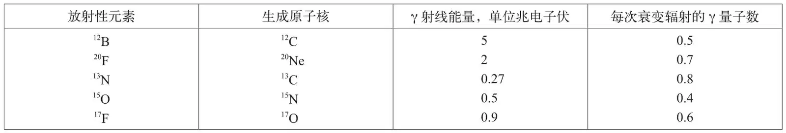

英文
英文贝特等
编者按
恩里科·费米最近提出了放射性β衰变理论。正如汉斯·贝特和他的同事在这里所指出的，该理论的预言与实验结果不符，例如，预言认为几乎没有出现低能电子。另一种理论虽能解决这个难题，但却引入了其他问题。本文作者给出的解答是，不妨假定费米理论是正确的，只是迄今为止的实验还没有观测到简单的放射性衰变过程，而观测到的是混在一起的导致不同核状态的衰变过程。如果仔细检查β衰变中放出的γ射线，或许可以发现支持这一观点的证据。 英文
费米最初的β衰变理论[1]明确地预言了从β放射性元素发射出的电子的能量分布。但是，人们发现[2]实验中能量分布曲线的形状与费米理论的预言不一致：在能量分布实验曲线中，低能电子（相对于能谱上限来说）的数目明显多于理论预言值。因此，科诺平斯基与乌伦贝克[3]对费米理论进行了修正（修正后的理论称为KU理论），他们在能量分布曲线中引入了一个与所放射的中微子的动量平方成正比的因子。修正后的理论似乎与实验结果相符。 英文
然而，进一步的实验证据揭示了很多与修正理论不符的现象：（1）所观测到的能谱形状在上限附近虽与KU理论不符，却与费米的原始理论一致，但费米理论并不能与曲线的其他部分相吻合[4]。如果通过KU理论推出上限位置，那么人们得到的值既难于与观察到的能谱吻合，也难于与基于能量平衡[5]的其他一些数据吻合。（2）萨金特曲线（衰变系数依衰变能量变化的曲线）似乎与费米理论[4]符合得更好。（3）和放射一个正电子的概率相比，俘获一个K电子的概率要远小于KU理论的预计，但是却在合理范围内与费米理论[6]一致。（4）曾经有人尝试进一步发展KU理论，以求达到数学形式上的一致，然而这比对费米理论进行相同的尝试要复杂得多，并且到目前为止仍然没有证据可以支持比一阶近似更高的精确度[7]。 英文
因此，我们认为，费米的原始理论正确地表示了基本法则。但是，因为观测到的能谱属于“允许”跃迁，所以并不表示单核转变的结果，而是向末态原子核不同能级跃迁形成的不同能谱的叠加。这样就可以清楚地看出，能量分布结果包含的（相对能谱上限来说）低能电子比一条单峰费米曲线包含的更多。如果原子核处于激发态，它最终将通过辐射来释放能量，因此可以验证我们观点的关键实验现象包括：存在从所有具有“允许”跃迁的放射性物质中放射出的具有适当强度和能量的γ射线，以及与单峰费米曲线不同的能谱。在某些情况下，γ射线也有可能不出现，因为原子核的激发态可能是一个亚稳的同质异能态，但是这种现象不可能对所有放射性元素都成立。对允许跃迁的限制是必要的，因为在“禁戒”跃迁中曲线的形状——即使是一条单峰曲线——都会受到更加复杂因素的影响[8]。 英文
用以上观点来解释福勒、德尔萨索以及劳里森[9]给出的12B、20F、17F、13N和15O电子能谱，我们估算了γ辐射的能量和强度的期望值。下表给出了计算结果。 英文

我们没能给出非常精确的结果，因为曲线拟合对电子能谱的高能端非常敏感，而我们对此了解得又不够精确，并且我们在实验理论中假设只存在一个激发态，而事实上可能存在很多激发态。 英文
理查森[10]曾报道过关于13N衰变伴随有γ射线出现的现象，并且给出γ射线的能量是0.3兆电子伏。伯彻姆和史密斯[11]报道过20F的γ辐射，其能量值由鲍尔[12]测得，约为2.2兆电子伏。虽然我们在表中列出的其他元素γ辐射的能量期望值还没有相关的实验报道，但有趣的是，17O的一个能级为0.83兆电子伏，这是已知存在的，因为它在其他很多核反应中是激发态[11,13]，类似地，12C一个能级为4.3兆电子伏的激发态也是已知的[13]。我们非常感谢迪伊先生与我们讨论了这些实验数据。 英文
最后，需要指出的是，虽然不能将上述证据看作是对我们提出的观点的强有力证明，但是这些证据肯定与KU理论不符，因为γ射线的存在表明观察到的曲线一定至少是两条单峰能谱的叠加，然而它们的形状并不是两条由于γ射线能量造成其端点不同的KU曲线的叠加。 英文
（王静 翻译；厉光烈 审稿）